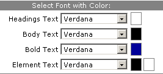
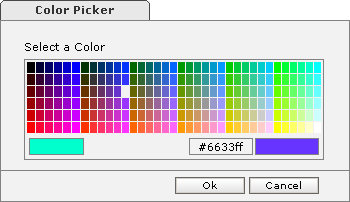

- Click on 'Edit Theme' icon [ ] from the Theme List, Edit Theme Page appears with previously saved data.
Modify Theme
- Styles:Choose a Style from the Choices box and corresponding ColorScheme for the selected Styles.
- Fonts: Choose font from the corresponding combo and color for Heading Text, Body Text, Bold Text and
Element Text.

Select Type and Color of Font
- Backgrounds: Choose either color or image from 'Select a Background' option.
- Color: Pick the color which you would like to keep as background color from the color palette.

Select color
- Image: Choose the image which you would like to keep as background from the list of images.

Select background images and color
- Press 'Preview' to see the preview of the Theme.
- Press 'Save' to save the modified Theme, the Theme will be saved and Theme list will appear with the message in the status Bar as "Theme 'StandardDesert' successfully saved".
- Press 'Cancel' to abort changes done on the Theme.